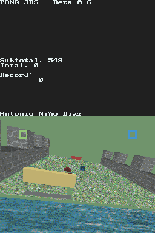
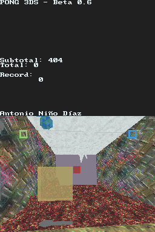

| HOME |
| Nintendo DS |
| Wii |
| GB/GBC |
| Other |
| Contact me |
| Pong 3DS |
| This is my first serious game I coded for NDS. It's a pong in 3D, you can control it with the touch screen. It has multiplayer DS to DS. Instructions You have to patch the game with DLDI in case your flashcart doesn't do it automaticaly. I didn't translate FAT error messages to English, sorry. The rest of the game is in Spanish or English, depending on the selected language of your DS. Controls Menu: [Pad + A + B] or [Stylus] Game: [Pad] or [Stylus] to move. [A] Unpause after goal. [L] or [Move Stylus to upper half of the screen] Jump. [Start] Pause. [Select] During pause, return to main menu. Multiplayer Just follow the steps you see on the screen. It's VERY buggy. History I started this game using only libnds, but then I used PAlib for sound and liblobby for multiplayer. First it was only a demo, I wanted to learn to do games in 3D, I thought the game was ok and I continued it. As a result, source code is very disorganiced and I make some strange things to display "correctly" 3D objects. I learned a lot while coding this game. Credits -Joat, Dovoto and WinterMute for libnds.
|


